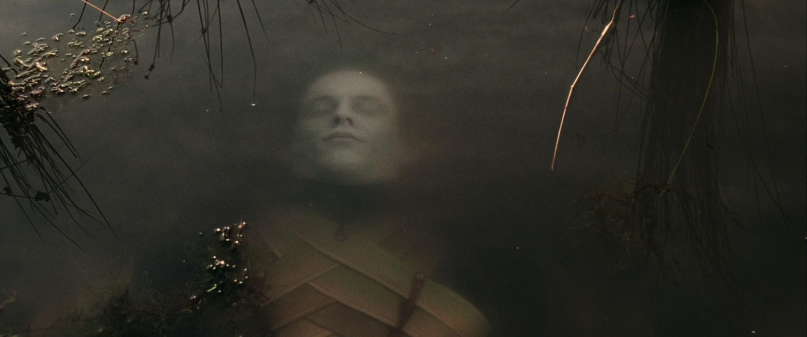

Prelude:
Having been weakened in the Downfall of Númenor it took Sauron some time to rebuild his physical form. Once he had done so he became aware that Elendil had survived the Downfall and that his sons Isildur and Anárion had founded a realm next to Mordor itself. Determined to crush the Númenórean exiles before their realms could take root, Sauron launched a surprise attack on Minas Ithil in SA 3429, taking the city and burning the White Tree of Gondor.
However he struck before his own power was fully rebuilt and in his absence the power of Gil-galad had grown stronger, even drawing nigh to Mordor itself. While Anárion defended Osgiliath, Isildur sailed north to Arnor to take counsel with Elendil. Realising that they had sufficient power to strike back, Elendil and Gil-galad formed the Last Alliance of Elves and Men, with the aim of putting an end to Sauron for good.
Because Elendil and Gil-galad had taken the initiative, they had the luxury of time to prepare for the coming battles. Both kings spent two years gathering their forces; Elendil and Isildur met Gil-galad at the watchtower of Amon Sûl on Weathertop, and together they led their hosts to Rivendell, where they were joined by Elrond and his company of Elves. In Rivendell, they spent a further three years making plans, forging weapons, and training for the great battle ahead of them. This was the reason Rivendell was also known as "The Great Forge".
The battle of Dagorlad:
Crossing the Misty Mountains, they journeyed south down the River Anduin, gathering Elves led by Oropher and Amdír, the kings of Greenwood and Lórien, respectively, and eventually were joined by the army of Gondor led by Isildur's brother Anárion and an army of Dwarves of Khazad-dûm.
The decisive battle took place before Mordor, on the plains of Dagorlad. It was here when the Last Alliance destroyed Sauron's main force. Although this was a victory, many were lost, including both kings Amdír and Oropher, due to their annoyance at following the supreme command of Gil-galad, the High King of the Ñoldor, and thus charging prematurely at the enemy. Many Silvan Elves were also killed alongside Oropher, and so were many Elves and Men. Many of Oropher's army fell in the face of the Black Gate, but Amdír and his army were driven back all the way to the Dead Marshes, where they were slain bitterly. The bodies of these Elves stayed preserved in the Marshes up until Frodo and Sam passed with Gollum.
This battle raged for days and nights continuously. But the Elves were still mighty in these times and the Númenóreans were tall and strong and terrible. And none could withstand Aeglos and Narsil, Gil-galad's spear and Elendil's sword which filled the orcs and wicked men with fear. Slowly Elves and Númenóreans whittled down the vast numbers of Orcs and pushed them back towards the Black Gate. No account is given how the Alliance managed to break through this mighty fortification though.
The Siege of Barad-dûr:
After this battle, the Black Gate was breached by the Alliance and the Siege of Barad-dûr began, lasting seven years, during which Anárion, son of Elendil and King of Gondor, was killed by a rock cast from Barad-dûr. Isildur's sons, Aratan and Ciryon, were detached and sent to Minas Ithil to guard against a breakout to the southwest, but his oldest son, Elendur served by his side till the end.
The forces battled for many years and the Alliance managed to advance little by little. In the seventh year of the siege, it became so pressing that Sauron himself came forth. His onslaught was terrible and the siege was almost broken as Sauron and his host advanced to the slopes of Mount Doom. There he was encountered by the captains of the Alliance, Gil-galad and Elendil and to their side stood Elrond, Círdan and Isildur. Sauron fought with Gil-galad and Elendil, and both were slain. As Elendil fell, his sword was broken beneath him. Yet Sauron was thrown down, too, and Isildur seized the hilt of his father's sword and cut off the finger on which Sauron wore the One Ring. Being bereft of its power, Sauron was no longer able to hold a physical form and perished.
Aftermath:
The Alliance pursued the Orcs, who were then in disarray, and killed them all. The Barad-dûr was levelled but its foundations remained behind since they were built with the power of the One Ring which was not destroyed. The thousands of dead Men and Elves were taken out of Mordor and buried in the Dagorlad Plain.
Over the course of the war, which ended with the Siege of Barad-dûr in S.A. 3441, most of the Silvan army had been lost. Thranduil led the remaining third of his army back home to the Greenwood.
While he had captured the One Ring, Isildur refused Elrond and Círdan's entreaties that he destroy it by casting it into the Crack of Doom, claiming it as a weregild for his father's and brother's death. The result of this was that while Sauron was defeated and cast down, his spirit was not destroyed. He hid in the dark lands east of Mordor, and slowly rebuilt his power. The Nine (Nazgûl) also bided their time for the day when he would rise again.
While the Orc armies of Sauron had been well nigh destroyed in the War, scattered groups of them survived. In the Last Alliance, the casualties had been heavy. Elendil and Anárion were gone, and Gil-galad, last High King of the Noldor, was no more. Arnor took grievous losses, and suffered from a decline in population. It never really recovered as a major power and broke into three pieces some centuries later. Gondor suffered less heavily and became a powerful nation. Isildur, the new High King of Arnor, perished only two years later in the Disaster of the Gladden Fields, along with his three older sons. They were ambushed by an Orc task force operating near the River Anduin. In the course of Isildur's death, the Ring was lost in the depths of Anduin. Much was lost, but Sauron was suppressed- for a while.
Losses:
| The Last Alliance | Sauron | |
|---|---|---|
| Casualties |
Men: Thousands, Gondor was the least Damaged Elfs: Two thirds of the Silvan Armies Hundreds of elfs from Rivendell and Lothlorien Dwarfs: More than half |
Myriads of Orcs, Easterlings, Haradrim, Variags, and other creatures Almost all forces destroyed, the rest scatered |
| Leaders Lost |
Gil-Galad Orophert Amdír Elendil Anárion |
The Nazgul Sauron lost his physical form |